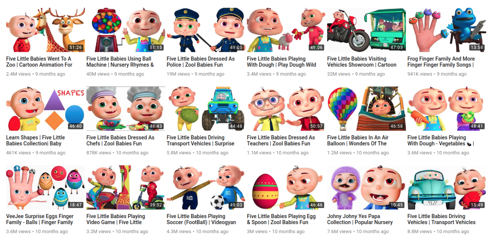
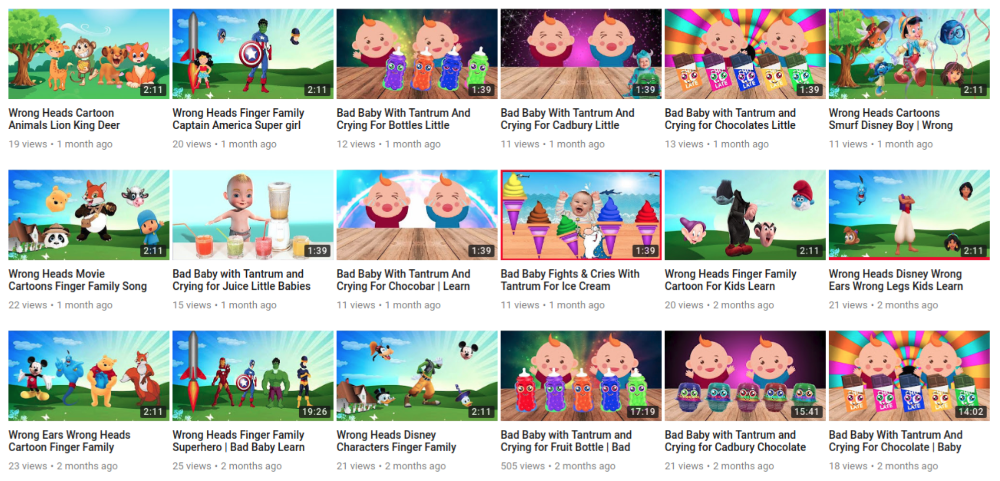
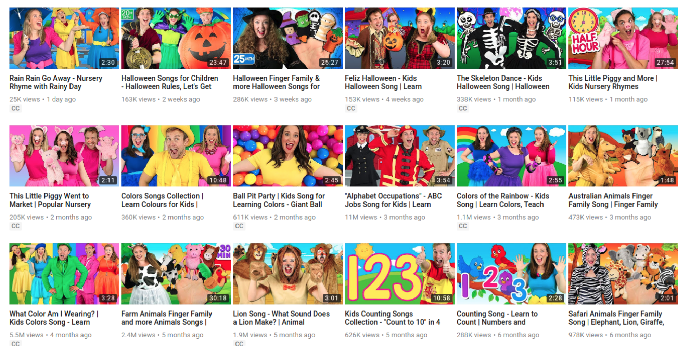

<!DOCTYPE html>
<head>

  <title>Piece</title>

<script src="http://ajax.googleapis.com/ajax/libs/jquery/1.5.1/jquery.min.js"></script>
<script type="text/javascript">

var contents = new Array()

document.write('<div class="array-body array-title borders">Something is wrong <br>on the internet</div>')

//FIRST
contents[0] = '<div class="array-body borders" id="ten">As someone who grew up on the internet, I credit it as one of the most important influences on who I am today. I had a computer with internet access in my bedroom from the age of 13. It gave me access to a lot of things which were totally inappropriate for a young teenager, but it was OK. The culture, politics, and interpersonal relationships which I consider to be central to my identity were shaped by the internet, in ways that I have always considered to be beneficial to me personally. I have always been a critical proponent of the internet and everything it has brought, and broadly considered it to be emancipatory and beneficial.</div>'

contents[8] = '<div class="array-body borders" id="nine">One of the hypothetical questions I ask myself frequently is how I would feel about my own children having the same kind of access to the internet today. And I find the question increasingly difficult to answer. I understand that this is a natural evolution of attitudes which happens with age, and at some point this question might be a lot less hypothetical. I don’t want to be a hypocrite about it. I would want my kids to have the same opportunities to explore and grow and express themselves as I did. I would like them to have that choice. And this belief broadens into attitudes about the role of the internet in public life as whole.</div>'

contents[9] = '<div class="array-body borders" id="eight">I’ve been aware for some time of the increasingly symbiotic relationship between younger children and YouTube. I see kids engrossed in screens all the time, in pushchairs and in restaurants, and there’s always a bit of a Luddite twinge there, but I am not a parent, and I’m not making parental judgments for or on anyone else. I’ve seen family members and friend’s children plugged into Peppa Pig and nursery rhyme videos, and it makes them happy and gives everyone a break, so OK.<br>&nbsp;&nbsp;&nbsp;&nbsp;&nbsp;But I don’t even have kids and right now I just want to burn the whole thing down.</div>'

//SECOND
contents[1] = '<div class="array-body borders" id="seven">Someone or something or some combination of people and things is using YouTube to systematically frighten, traumatise, and abuse children, automatically and at scale, and it forces me to question my own beliefs about the internet, at every level.<br>&nbsp;&nbsp;&nbsp;&nbsp;&nbsp;The video titles are a continuous pattern of obscure branded lines and tie-ins: <mark>Surprise Play Doh Eggs Peppa Pig Stamper Cars Pocoyo Minecraft Smurfs Kinder Play Doh Sparkle Brilho</mark>, <mark>Cars Screamin’ Banshee Eats Lightning McQueen Disney Pixar</mark>, <mark>Disney Baby Pop Up Pals Easter Eggs SURPRISE.</mark></div>'

//THIRD
// contents[2] = '<div class="array-body borders center id="three""><br><br><br><br><br></div>'

contents[3] = '<div class="array-body borders" id="six">YouTube broadcasters have  developed a huge number of tactics to draw parents’ and childrens’ attention to their videos, and the advertising revenues that accompany them. The first of these tactics is simply to copy and pirate other content. A simple search for “Peppa Pig” on YouTube in my case yielded “About 10,400,000 results” and the front page is almost entirely from the verified “Peppa Pig Official Channel”, while one is from an unverified channel called <mark>Play Go Toys,</mark> which you really wouldn’t notice unless you were looking out for it.</div>'

contents[4] = '<div class="array-body borders" id="five"><mark>Play Go Toys’</mark> channel consists of (I guess?) pirated Peppa Pig and other cartoons, videos of toy unboxings, and videos of the channel owner’s own children. I am not alleging anything bad about <mark>Play Go Toys;</mark> I am simply illustrating how the structure of YouTube facilitates the delamination of content and author, and how this impacts on our awareness and trust of its source.<br>&nbsp;&nbsp;&nbsp;&nbsp;&nbsp;As another blogger notes, one of the traditional roles of branded content is that it is a trusted source. Whether it’s Peppa Pig on children’s TV or a Disney movie, whatever one’s feelings about the industrial model of entertainment production, they are carefully produced and monitored so that kids are essentially safe watching them, and can be trusted as such.</div>'

contents[5] = '<div class="array-body borders" id="four">A striking example of the weirdness is the Finger Family videos. I have no idea where they came from or the origin of the children’s rhyme at the core of the trope, but there are at least 17 million versions of this currently on YouTube, and again they cover every possible genre, with billions and billions of aggregated views.<br>&nbsp;&nbsp;&nbsp;&nbsp;&nbsp;Once again, the view numbers of these videos must be taken under serious advisement. A huge number of these videos are essentially created by bots and viewed by bots, and even commented on by bots. That is a whole strange world in and of itself.</div>'

contents[6] = '<div class="array-body borders" id="three">What I find somewhat disturbing about the proliferation of even normal kids videos is the impossibility of determining the degree of automation which is at work here; how to parse out the gap between human and machine. There is something weird about groups of people endlessly acting out the implications of a combination of algorithmically generated keywords: <mark>Halloween Finger Family & more Halloween Songs for Children | Kids Halloween Songs Collection</mark>, <mark>Australian Animals Finger Family Song | Finger Family Nursery Rhymes</mark>, <mark>Farm Animals Finger Family and more Animals Songs | Finger Family Collection</mark>, <mark>Superheroes Finger Family and more Finger Family Songs! Superhero Finger Family Collection.</mark></div>'

contents[7] = '<div class="array-body borders" id="two">Some Youtube channels do away with the human actors to create infinite reconfigurable versions of the same videos over and over again. What is occurring here is clearly automated. Stock animations, audio tracks, and lists of keywords being assembled in their thousands to produce an endless stream of videos. The above channel, <mark>Videogyan 3D Rhymes — Nursery Rhymes & Baby Songs</marl>, posts several videos a week, in increasingly byzantine combinations of keywords. They have almost five million subscribers — more than double Bounce Patrol — although once again it’s impossible to know who or what is actually racking up these millions and millions of views.</div>'

contents[10] = '<div class="array-body borders" id="one">Disturbing Peppa Pig videos, which tend towards extreme violence and fear, with Peppa eating her father or drinking bleach, are, it turns out very widespread. They make up an entire YouTube subculture. Many are obviously parodies, or even satires of themselves, in the pretty common style of the internet’s outrageous, deliberately offensive kind. All the 4chan tropes are there, the trolls are out, we know this.<br>&nbsp;&nbsp;&nbsp;&nbsp;&nbsp;The agency is less clear: the video starts with a trollish Peppa parody, but later syncs into the kind of automated repetition of tropes we’ve seen already. I don’t know which camp it belongs to. Maybe it’s just trolls. I kind of hope it is. But I don’t think so. Trolls don’t cover the intersection of human actors and more automated examples further down the line.</div>'

// contents[11] = '<div class="array-body borders center"><br><br><br><br><br></div>'

// contents[12] = '<div class="array-body borders center"><br><br><br><br><br></div>'

// contents[12] = '<div class="array-body borders center"><br><br><br><br><br><iframe  src="https://www.youtube.com/embed/D52hg9ogvWc" frameborder="0" allow="autoplay; encrypted-media" allowfullscreen></iframe></div>'

contents[2] = '<div class="array-body borders quote"><br>This is content production in the age of algorithmic discovery — even if you’re a human, you have to end up impersonating the machine.</div>'

contents[11] = '<div class="array-body borders quote"><br>We’re still struggling to find <br>a way to even <br>talk about it, to describe its mechanisms and its actions and its effects.</div>'

contents[12] = '<div class="array-body borders quote"><br>This is being done by people and <br>by things and by a combination of things and people. Responsibility for its outcomes is impossible to assign.</div>'

contents[13] = '<div class="array-body borders quote"><br>This automation takes us to very, very strange places, and at this point the rabbithole is so deep that it’s impossible to know how such a thing came into being.</div>'

var i = 0
var random

while (i < contents.length) {

  random = Math.floor(Math.random() * contents.length)

  if (contents[random] != "done" ) {

    document.write(contents[random])
    contents[random] = "done"

    i++

  }

}

</script>

<style type="text/css">

body { 

  margin: 0;
  padding: 0;
  display: inline-block;
  background-color: white; 
  font-family: arial;
  font-size: 1.1vw;
  line-height: 1.5vw;
  letter-spacing: 0.03em;
  color: black;

  }

.array-body {

  margin: 0;
  display: inline-block;
  position: relative;
  padding-top: 25px;
  padding-left: 35px;
  padding-right: 35px;
  padding-bottom: 25px;
  width: 27vw;
  height: 27vw;
  overflow: hidden;

}

.array-title {

  text-transform: uppercase;
  font-size: 1.8vw;
  line-height: 2.2vw;

}

.borders {

  border-right: dashed 1px black;
  border-top: dashed 1px black;
  border-bottom: dashed 1px black;


}

.center {
  
  text-align: center;

}

.quote {

  background-color: greenyellow;
  font-size: 2vw;
  line-height: 2.7vw;
  color: black;
  text-align: center;
  text-transform: uppercase;
  /*padding-top: 2.2vw;*/

}

img {

  top: 25%;
  width: 94%;

}

i {

  color: black;
  /*text-decoration: underline;*/

}

mark {

  background: transparent;

}

#eleven{

  background: #f4fcff;

}

#ten {

  background: #e5f8ff;

}

#nine {

  background: #ccf2ff;

}

#eight {

  background: #b2ebff;

}

#seven {

  background: #99e5ff;

}

#six {

  background: #7fdfff;

}

#five {

  background: #66d8ff;

}

#four {

  background: #4cd2ff;

}

#three {

  background: #32cbff;

}

#two {

  background: #19c5ff;

}

#one {

  background: #00bfff;

}

</style>
</head>
<body>
  
</body>
</html>